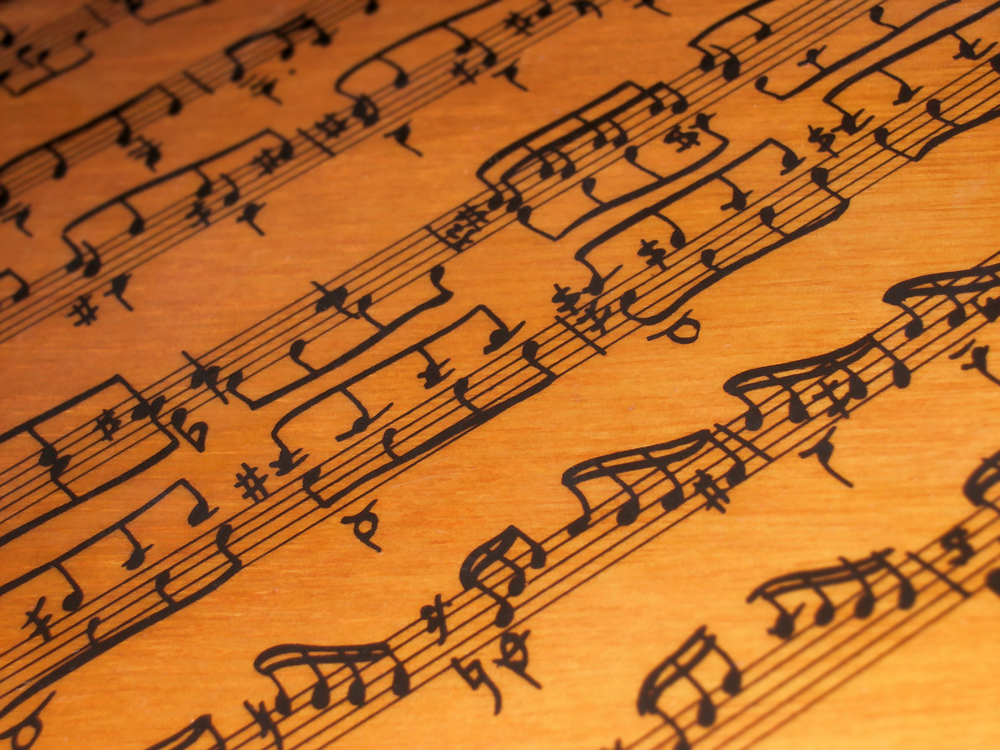

Pięciolinia, klucze, nazwy nut, rytm i metrum — alfabet, w którym zapisana jest cała muzyka.
Aktualizacja: 2026-06
Nuty to nic innego jak wykres dźwięku w czasie: oś pionowa mówi, jak wysoki jest dźwięk (wyżej na pięciolinii = wyżej na klawiaturze), a oś pozioma — kiedy i jak długo go gramy. Gdy zrozumiesz te dwie osie, czytanie nut przestaje być tajemnicą i staje się po prostu czytaniem. W tym rozdziale rozkładamy zapis na czynniki pierwsze.

Pięciolinia to pięć równoległych linii (i cztery przestrzenie między nimi). Im wyżej leży nuta, tym wyższy dźwięk. Sama pięciolinia nie wystarcza — żeby wiedzieć, które konkretnie dźwięki oznaczają linie i pola, na początku stawiamy klucz.
W zapisie fortepianowym obie pięciolinie łączymy klamrą w system fortepianowy (wielką pięciolinię). Między nimi, na krótkiej linii pomocniczej, leży środkowe C — wspólny punkt styku obu kluczy.
W muzyce jest tylko siedem nazw dźwięków podstawowych, które powtarzają się w kółko: C D E F G A H, a potem znów C. To te same litery, którymi opisaliśmy białe klawisze w rozdziale o klawiaturze.
| Polski | Międzynarodowy | Solmizacja |
|---|---|---|
| C | C | do |
| D | D | re |
| E | E | mi |
| F | F | fa |
| G | G | sol |
| A | A | la |
| H | B | si |
| B (= H♭) | B♭ / Bes | si bemol |
Dźwięki wykraczające poza pięć linii zapisujemy na krótkich liniach pomocniczych (dodanych) — dorysowanych nad lub pod pięciolinią. Tak właśnie zapisujemy środkowe C: jako nutę na jednej linii pomocniczej pod kluczem wiolinowym lub nad kluczem basowym. Im więcej linii pomocniczych, tym dalej dźwięk od środka — i tym trudniej go odczytać „od ręki", dlatego najwyższe i najniższe dźwięki bywają przenoszone o oktawę znakiem 8va.
Kształt nuty mówi nie o wysokości, lecz o czasie trwania. Każda kolejna wartość jest dwa razy krótsza od poprzedniej — to system połówkowy, łatwy do liczenia.
| Nuta | Wartość (4/4) | Odpowiadająca pauza |
|---|---|---|
| Cała nuta | 4 miary (cały takt) | Pauza całonutowa (prostokąt pod 4. linią) |
| Półnuta | 2 miary | Pauza półnutowa (prostokąt na 3. linii) |
| Ćwierćnuta | 1 miara | Pauza ćwierćnutowa |
| Ósemka | ½ miary | Pauza ósemkowa |
| Szesnastka | ¼ miary | Pauza szesnastkowa |
Pauzy to cisza o ściśle określonej długości — milczenie też jest częścią muzyki i liczymy je dokładnie tak samo jak nuty.
Pionowe kreski taktowe dzielą pięciolinię na równe odcinki — takty. Na początku utworu (po kluczu) stoi metrum, czyli dwie cyfry jedna nad drugą:
Metrum 4/4 oznacza więc: cztery ćwierćnuty w takcie. Liczymy „raz–dwa–trzy–cztery", z naturalnym akcentem na „raz" (i słabszym na „trzy").
| Metrum | Liczymy | Charakter | Przykład |
|---|---|---|---|
| 4/4 (C) | raz-dwa-trzy-cztery | Najczęstsze, „marszowe", uniwersalne | pop, rock, większość piosenek |
| 3/4 | raz-dwa-trzy | Walcowe, kołyszące | walc, mazurek |
| 2/4 | raz-dwa | Żwawe, marszowe | polka, marsz |
| 6/8 | raz-dwa-trzy / cztery-pięć-sześć | Złożone, „bujające" w dwóch grupach po trzy | barkarola, niektóre ballady |
Znaki chromatyczne przesuwają dźwięk o półton — czyli najczęściej na sąsiedni czarny klawisz:
Znak postawiony bezpośrednio przed nutą (znak przygodny) obowiązuje do końca taktu. Znaki ustawione na stałe zaraz za kluczem to znaki przykluczowe — obowiązują w całym utworze i wyznaczają tonację. Na przykład jeden krzyżyk (Fis) przy kluczu to G-dur lub e-moll.